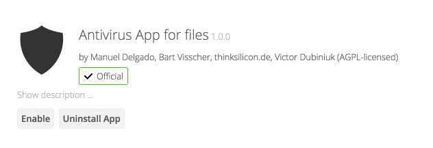
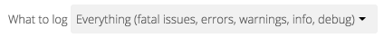
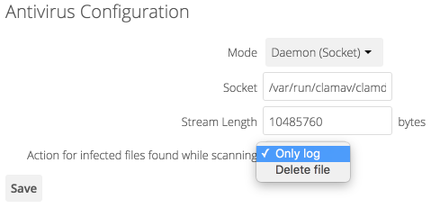
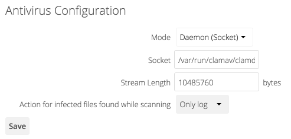
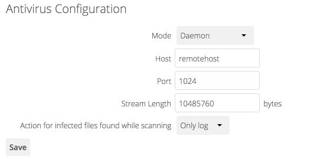
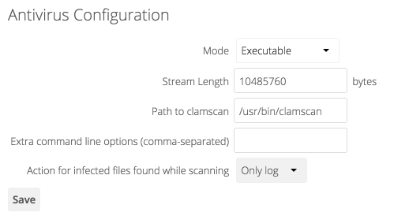
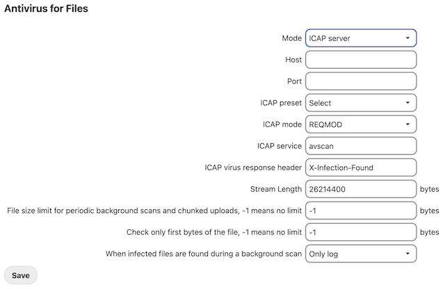

Antivirus scanner
You can configure your Nextcloud server to automatically run a virus scan on newly-uploaded files with the Antivirus app for Files. The Antivirus app for Files integrates the open source anti-virus engine ClamAV with Nextcloud. ClamAV detects all forms of malware including Trojan horses, viruses, and worms, and it operates on all major file types including Windows, Linux, and Mac files, compressed files, executables, image files, Flash, PDF, and many others. ClamAV’s Freshclam daemon automatically updates its malware signature database at scheduled intervals.
ClamAV runs on Linux and any Unix-type operating system, and Microsoft Windows. However, it has only been tested with Nextcloud on Linux, so these instructions are for Linux systems. You must first install ClamAV, and then install and configure the Antivirus app for Files on Nextcloud.
Installing ClamAV
As always, the various Linux distributions manage installing and configuring ClamAV in different ways.
- Debian, Ubuntu, Linux Mint
On Debian and Ubuntu systems, and their many variants, install ClamAV with these commands:
apt-get install clamav clamav-daemon
The installer automatically creates default configuration files and launches the
clamd and freshclam daemons. You don’t have to do anything more, though
it’s a good idea to review the ClamAV documentation and your settings in
/etc/clamav/. Enable verbose logging in both clamd.conf and
freshclam.conf until you get any kinks worked out.
- RedHat Enterprise Linux 7, CentOS 7
On RedHat Enterprise Linux 7 and related systems you must install the Extra Packages for Enterprise Linux (EPEL) repository, and then install ClamAV:
yum install epel-release yum install clamav clamav-scanner clamav-scanner-systemd clamav-server clamav-server-systemd clamav-update
This installs two configuration files: /etc/freshclam.conf and
/etc/clamd.d/scan.conf. You must edit both of these before you can run
ClamAV. Both files are well-commented, and man clamd.conf and man
freshclam.conf explain all the options. Refer to /etc/passwd and
/etc/group when you need to verify the ClamAV user and group.
First edit /etc/freshclam.conf and configure your options.
freshclam updates your malware database, so you want it to run frequently to
get updated malware signatures. Run it manually post-installation to download
your first set of malware signatures:
freshclam
The EPEL packages do not include an init file for freshclam, so the quick
and easy way to set it up for regular checks is with a cron job. This example
runs it every hour at 47 minutes past the hour:
# m h dom mon dow command
47 * * * * /usr/bin/freshclam --quiet
Please avoid any multiples of 10, because those are when the ClamAV servers are hit the hardest for updates.
Next, edit /etc/clamd.d/scan.conf. When you’re finished you must enable
the clamd service file and start clamd:
systemctl enable clamd@scan.service
systemctl start clamd@scan.service
That should take care of everything. Enable verbose logging in scan.conf
and freshclam.conf until it is running the way you want.
- Docker, Docker-compose
To install ClamAV via docker or docker compose you can take official image of ClamAV, or build one by yourself. This example is based on docker image from https://github.com/Cisco-Talos/clamav.
You can mount ClamAV Socket from the Docker Container to the host System as volume. In this case you do not need to expose any port outside of container.
For a Docker run this command:
docker run --name clamav -d -v /var/run/clamav/:/var/run/clamav/ -v /var/docker/clamav/virus_db/:/var/lib/clamav/ clamav/clamav:stable_base
For a Docker-compose use following settings:
version: "3.6"
services:
clamav:
image: "clamav/clamav:stable_base"
container_name: "clamav"
volumes:
# Socket
- /var/run/clamav/:/var/run/clamav/
# Virus DB
- /var/docker/clamav/virus_db/:/var/lib/clamav/
restart: unless-stopped
Enabling the antivirus app for files
Place the files_antivirus app into the apps directory of your Nextcloud
server. Then the app shows up on the Nextcloud Apps page where it simply can be
enabled.

Configuring ClamAV on Nextcloud
Next, go to your Nextcloud Admin page and set your Nextcloud logging level to Everything.

Now find your Antivirus Configuration panel on your Admin page.

ClamAV runs in one of three modes:
Daemon (Socket): ClamAV is running on the same server as Nextcloud. The ClamAV daemon,
clamd, runs in the background. When there is no activityclamdplaces a minimal load on your system. If your users upload large volumes of files you will see high CPU usage.Daemon: ClamAV is running on a different server. This is a good option for Nextcloud servers with high volumes of file uploads.
Executable: ClamAV is running on the same server as Nextcloud, and the
clamscancommand is started and then stopped with each file upload.clamscanis slow and not always reliable for on-demand usage; it is better to use one of the daemon modes.
- Daemon (Socket)
Nextcloud should detect your
clamdsocket and fill in theSocketfield. This is theLocalSocketoption inclamd.conf. You can runnetstatto verify:netstat -a|grep clam unix 2 [ ACC ] STREAM LISTENING 15857 /var/run/clamav/clamd.ctl

The
Stream Lengthvalue sets the number of bytes read in one pass. 26214400 bytes, or 25 MiB, is the default. This value should be no larger than the PHPmemory_limitsettings, or physical memory ifmemory_limitis set to -1 (no limit).Action for infected files found while scanninggives you the choice of logging any alerts without deleting the files, or immediately deleting infected files.- Daemon
For the Daemon option you need the hostname or IP address of the remote server running ClamAV, and the server’s port number.

- Executable
The Executable option requires the path to
clamscan, which is the interactive ClamAV scanning command. Nextcloud should find it automatically.
When you are satisfied with how ClamAV is operating, you might want to go back and change all of your logging to less verbose levels.
Confirm everything is working
Every antivirus provider implements a test virus string, that way tests are quite easy. You find the files here: https://www.eicar.org/download-anti-malware-testfile/
- Uploading the file will trigger an error:
“Virus Win.Test.EICAR_HDB-1 is detected in the file. Upload cannot be completed.”
Encrypted File Detection Limitations with ClamAV
By default, ClamAV may still return “OK” for password-protected archives and encrypted files.
This known ClamAV behavior bypasses “Block unscannable files” option of Antivirus app.
You may configure additional alert options in clamd.conf, that should catch it:
AlertEncryptedArchive- Alert on encrypted archives with heuristic signature (encrypted .zip, .7zip, .rar).AlertEncryptedDoc- Alert on encrypted archives with heuristic signature (encrypted .pdf).AlertEncrypted- Alert on both encrypted archives and documents with heuristic signature.
For reliable detection and blocking of encrypted files, consult available antivirus backends documentation.
How scanning works
The following applies to all scanner modes, including ICAP:
Uploads are scanned while they are being written. The app installs a storage wrapper that observes every write, so the data is streamed to the scanner as it arrives rather than after the file is complete.
When the verdict is “infected”, the newly written file is deleted and the upload is refused with the message Virus <name> is detected in the file. Upload cannot be completed. The trash bin is paused while the file is deleted, so the infected file does not end up in the user’s trash. An entry is written to the log and to the user’s activity stream.
Files that already existed, files that were accepted while the scanner was unavailable, and files whose scan is older than
av_rescan_days(default28) are handled by the background scanner, which scans in batches on the cron schedule. For infected files found by the background scanner, the action is controlled byav_infected_action, which defaults toonly_log. See Manage the background scanner.Some content is never sent to the scanner: end-to-end encrypted files and their metadata, and anything under a directory listed in
av_blocklisted_directories.
Scan limits
Three settings bound how much of a file is sent to the scanner, and all three change what the verdict is actually based on:
av_scan_first_bytesDefault
-1, meaning the whole file. With a positive value, only about the first that many bytes of a file are sent, so the scanner returns a verdict on a prefix of the file and malware later in the file is not seen.av_stream_max_lengthDefault
26214400(25 MiB). A file larger than this is not sent in a single scan: the scan is finished and evaluated, and a new one is started for the following bytes. Each segment is scanned on its own, and a detection in any segment marks the file as infected. Detections that depend on seeing a whole object, such as a large archive, can be missed when the object spans a segment boundary, so raise this limit rather than lowering it if your scanner and the PHPmemory_limitallow for it.av_max_file_sizeDefault
-1, meaning no limit. With a positive value, files larger than this are excluded from background scanning entirely, and chunked WebDAV uploads larger than this are not scanned at all. They are stored unscanned; they are not partially scanned.
Manage the background scanner
The background scanner does not require any manual intervention. However at times you might want to inspect it or perform tasks on it.
How the background scanner works
Each time the background scanner runs, it processes files in three passes (in priority order), up to the configured batch size per run:
Unscanned files — files that have never been scanned, including files that were uploaded or existed before the Antivirus app was installed. All such files will eventually be scanned as the background job runs repeatedly.
Modified files — files whose modification time is newer than their last scan time, i.e. files that have been updated since they were last scanned.
Outdated files — files that were last scanned more than 28 days ago (configurable via
av_rescan_days), to account for updated virus definitions.
The scanner runs at most once every 15 minutes by default. The effective frequency is also bounded by how often Nextcloud’s background job mechanism (cron, webcron, or ajax) runs.
To change the minimum interval between runs (in seconds):
sudo -E -u www-data php occ config:app:set files_antivirus av_scan_interval --value="900"
To change the number of days before already-scanned files are rescanned:
sudo -E -u www-data php occ config:app:set files_antivirus av_rescan_days --value="28"
External storage: files on external storage are included in passes 1 and 2
(initial scan and rescan on modification). However, the periodic 28-day rescan
(pass 3) applies only to files under files/ (i.e. home storage), not external storage.
Get info about files in the scan queue
sudo -E -u www-data php occ files_antivirus:status [-v]
Manually trigger the background scan
sudo -E -u www-data php occ files_antivirus:background-scan [-v] [-m MAX]
Manually scan a single file
sudo -E -u www-data php occ files_antivirus:scan <path>
Mark a file as scanned or unscanned
sudo -E -u www-data php occ files_antivirus:mark <path> <scanned|unscanned>
Files marked as scanned will not be scanned for the next four weeks.
Configuring ICAP on Nextcloud
Instead of talking to ClamAV directly, the Antivirus app for Files can hand files to an external scanning service using ICAP, the Internet Content Adaptation Protocol (RFC 3507). In this mode Nextcloud does not run a scanner itself: it opens a TCP connection to an ICAP server, streams the file to it and acts on the verdict that comes back.
Use ICAP mode when:
you already operate an enterprise scanning appliance or scanning service that speaks ICAP, possibly shared with your mail gateway or proxy. The administration settings ship presets for ClamAV / c-icap, Kaspersky and FortiSandbox;
you want to run ClamAV behind
c-icapon a separate host, so that scanning load and signature updates are kept away from the Nextcloud servers;your scanner should also enforce a file type or file extension policy, which ICAP mode understands in addition to malware verdicts (see How ICAP responses are interpreted).
To enable it, select ICAP as the mode in the Antivirus Configuration panel
on your Admin page, or set it with occ:
sudo -E -u www-data php occ config:app:set files_antivirus av_mode --value="icap"

Settings
The host and port are shared with the other network modes; all other settings below are specific to ICAP mode.
Option |
Default |
Description |
|---|---|---|
|
|
Set to |
|
(empty) |
Hostname or IP address of the ICAP server. Scanning fails if this is not set. |
|
|
Port of the ICAP server. Note that this default is the ClamAV daemon port, not the ICAP default port of 1344, so it almost always has to be changed. |
|
|
The ICAP service to call, that is the path part of the request URI
|
|
|
Either |
|
|
The ICAP response header from which the threat name is read. This is vendor specific; see The virus response header. |
|
|
Whether to wrap the ICAP connection in TLS. See Transport security. |
|
|
Number of bytes buffered in memory before they are sent to the ICAP server. |
|
|
Timeout in seconds for establishing the TCP or TLS connection to the ICAP server. The read timeout on an established connection is fixed at 600 seconds. |
All of these can be set with occ, for example:
sudo -E -u www-data php occ config:app:set files_antivirus av_host --value="icap.example.com"
sudo -E -u www-data php occ config:app:set files_antivirus av_port --value="1344"
sudo -E -u www-data php occ config:app:set files_antivirus av_icap_request_service --value="avscan"
sudo -E -u www-data php occ config:app:set files_antivirus av_icap_mode --value="reqmod"
sudo -E -u www-data php occ config:app:set files_antivirus av_icap_response_header --value="X-Infection-Found"
sudo -E -u www-data php occ config:app:set files_antivirus av_icap_tls --value="true"
sudo -E -u www-data php occ config:app:set files_antivirus av_icap_chunk_size --value="1048576"
sudo -E -u www-data php occ config:app:set files_antivirus av_icap_connect_timeout --value="5"
The Antivirus Configuration panel exposes the host, port, service, virus
response header and TLS switch, plus a preset selector that fills in service,
header and mode for ClamAV / c-icap, Kaspersky and FortiSandbox. The ICAP mode
select in the panel follows the preset and cannot be changed on its own, so to
use a mode that differs from the preset, set av_icap_mode with occ.
The chunk size and the connection timeout can only be set with occ.
The settings shared with the other modes also apply in ICAP mode: the
streaming limits av_stream_max_length, av_max_file_size and
av_scan_first_bytes (see Scan limits), and the
handling options av_block_unscannable, av_block_unreachable and
av_infected_action (see How ICAP responses are interpreted).
Choosing between REQMOD and RESPMOD
Use the mode your ICAP service supports. If the vendor has no preference, use
respmod.
The virus response header
When the ICAP server reports an infection it names the threat in a response
header, and the name of that header differs per vendor. av_icap_response_header
must match exactly what your scanner sends: c-icap with ClamAV uses
X-Infection-Found, Kaspersky uses X-Virus-ID, and other products use
other names. The value of that header becomes the threat name that is logged
and shown to the user.
Warning
A wrong av_icap_response_header can fail silently. Nextcloud
still flags a file as infected when the scanner answers with an
encapsulated 403 response, as older Kaspersky editions and McAfee do.
Scanners that report an infection only through the response header, on a
204 or 200 response, are a different case: if the configured header
is not the one they send, the file is treated as clean and accepted without
any error being logged. Always verify the setting against a real detection
instead of assuming that an error-free upload means scanning works.
Verifying the configuration
Use the built-in test command, which scans harmless content and two variants of the EICAR test file through the configured backend:
sudo -E -u www-data php occ files_antivirus:test
The command fails if the clean content is reported as infected, or if either EICAR sample is reported as clean, which is exactly the failure mode of a wrong virus response header. It reports files that could not be scanned or were not scanned separately, so a run that reports pending or unscannable results is not a confirmation that detection works.
ICAP mode also supports debug output, which prints the generated ICAP request headers and the raw ICAP response. This is the quickest way to see which header a scanner actually returns:
sudo -E -u www-data php occ files_antivirus:test --debug
Saving the settings in the Antivirus Configuration panel also runs a scan of dummy content and reports the result, so a saved configuration that cannot reach the ICAP server is reported immediately.
How ICAP responses are interpreted
ICAP mode distinguishes more outcomes than clean and infected:
Scanner reports |
Result |
Handling |
|---|---|---|
The file is clean |
Clean |
The file is accepted. |
A virus was found |
Infected |
The upload is rejected and the file is deleted, see How scanning works. |
The file type or file extension is blocked |
Infected |
Treated exactly like a malware detection, so an ICAP scanner can also enforce a file type policy for Nextcloud uploads. |
The file cannot be scanned, for example a password-protected archive, an archive nested too deeply, or a file that cannot be decoded |
Unscannable |
Accepted or rejected according to |
The file was not checked |
Not checked |
Accepted or rejected according to |
Any other response or error |
Error |
The scan fails with an error and the upload does not complete. |
Two settings decide what happens to a file the scanner did not clear:
av_block_unscannableDefault
false. Files the scanner reported as unscannable, such as password-protected archives or archives nested more deeply than the scanner will unpack, are accepted with the default setting. Set it totrueto reject them instead:sudo -E -u www-data php occ config:app:set files_antivirus av_block_unscannable --value="true"
av_block_unreachableDefault
true. With the default setting, a file is rejected when the ICAP server cannot be reached at all or the file couldn’t be scanned, and the user is told that the upload cannot be completed. Set it tofalseto accept uploads while the scanner is unavailable; such files are not marked as scanned, so the background scanner picks them up later.
Warning
These two defaults mean that, out of the box, a file that could not be checked because it is unscannable is treated as safe and stored, while a file that could not be checked because the scanner was unreachable is refused. Decide deliberately which behaviour you want before relying on ICAP scanning as a control.
Transport security
By default, av_icap_tls is false and the ICAP connection is a plain
TCP connection. With TLS enabled:
sudo -E -u www-data php occ config:app:set files_antivirus av_icap_tls --value="true"
the connection is established as tls://<av_host>:<av_port> with peer and
peer name verification enabled, validated against the CA bundle managed by
Nextcloud. A scanner presenting a self-signed or private-CA certificate
therefore needs that certificate imported into Nextcloud, in the same way as
for external storage.
Warning
Unless av_icap_tls is enabled, the connection to the ICAP
server is unencrypted: the contents of every scanned file, the file path and
the uploader’s IP address are sent in plaintext. Only leave TLS off when the connection stays on a network you
fully control, and never for a remote or cloud-hosted scanning service.
What is sent to the scanning service
For a data protection assessment, this is what leaves the Nextcloud server on every ICAP scan:
The file contents, subject to the Scan limits.
The file path. For a file in an account’s own storage it has the form
/<account>/files/<path>, so the account’s user ID is part of it.The uploader’s IP address, whenever the scan is triggered by a request. Background scans send none.
No account name, display name, email address, group membership, share information, comment or tag is sent. Nothing is transmitted back into Nextcloud from the scanner except the verdict, and the threat name is stored and logged with the scan result.
Warning
If your ICAP server is operated by a third party or hosted outside your own infrastructure, then enabling ICAP mode means you are transferring file contents, file paths including account user IDs, and client IP addresses to that third party for every upload and every background scan. Cover this in your processing records and contracts before enabling it.
Disabling background scan task
You can disable background scan with occ to only scan files during upload:
sudo -E -u www-data php occ config:app:set files_antivirus av_background_scan --value="off"
Note
Setting av_rescan_days to 0 does not disable the periodic rescan of
already-scanned files. Any value below 1 is silently replaced with the default of 28 days,
so the rescan continues on its normal schedule. Use av_background_scan as shown above to
stop background scanning altogether.